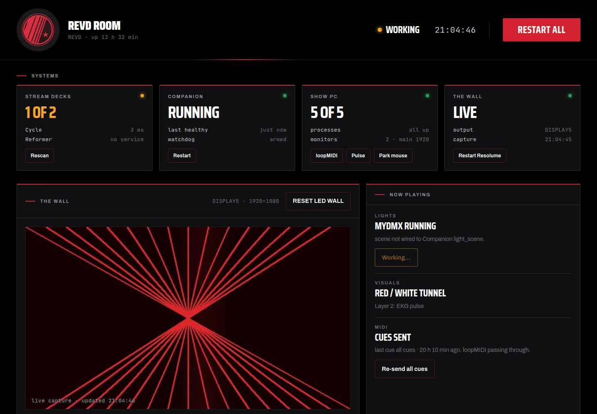

REVd Cycling
The instructor never touches software.
A boutique cycling studio wanted a room that reacts — LED wall, moving light, strobes, all shifting with the class. What it could not have was an instructor crouched over a laptop mid-ride. So the whole system collapses into fifteen labelled buttons.
The brief
Two rooms. One studio PC. A wraparound LED wall, a DMX rig, and a class schedule that never pauses for a technical problem.
The studio already owned good equipment — Resolume Arena driving the wall, MyDMX 3 driving the fixtures. The problem was never capability. It was that running a class meant alt-tabbing between two professional VJ applications while pedalling, and nobody was going to do that at 6am.
The system I built puts a Stream Deck in each room and hides everything else. Visuals travel over OSC. Lighting travels over MIDI through a virtual cable. The two paths are deliberately independent, so a failure in one leaves the other running — and the room stays usable while it gets fixed.
One press, one action
Every button does exactly one thing, and its face says what that thing is. No holds, no double-taps, no hidden modes. The single exception is Blackout All, which toggles — because the one moment you need to kill the room, you also need to bring it back.


Every setup screen exists and works. The room deck simply cannot navigate to it — surface groups restrict each deck to a single page. Opening the full instructor workflow later is a configuration change, not new construction. Shipping less than was built is what made version one safe to hand over.
The room, running
Three phases — Warm Up, Build, Peak — each a source and mask pair on the wall, each clearing every other phase as it fires. Nothing can bleed between them, and no phase can be half-live.

Two paths that don't need each other
This separation is the load-bearing decision in the whole build. Visuals and lighting never share a transport. When something breaks, the half that still works tells you where to look.
Companion holds all state itself rather than reading it back — which is why the button outlines can be trusted even when the applications behind them are minimised and forgotten.
Behind the glass
Under the surface it is ordinary professional tooling, wired so that nobody has to look at it. Scenes live in MyDMX with their own fade times; Companion only ever sends a trigger.


Rules the system has to keep
These were written down before the build and checked after every change. They are the difference between a room that works and a room that mostly works.
- Instructors never see software
No workflow may require a window, a mouse, or a decision about Resolume.
- One press, one action
No holds, no double-taps, no hidden functions.
- The green outline is always true
Every state change updates every sibling, in the same action list.
- Zones stay independent
A wash change must never disturb the podium or the other room.
- Blackouts always fully recover
From any state, kill and restore must return a usable room.
- Black is the resting state
No effect may lift the black level of the wall.
- Phases are exclusive
Never two live at once. Never zero after a press.
Handed over, not just installed
The build shipped with two documents: a technical reference for whoever maintains it, and a one-page quick guide for whoever teaches the class.
A show control system that only its builder understands is a liability. The documentation is what makes it an asset — it lets someone else add a lighting scene in a year without quietly breaking the blackouts, and lets a new instructor run the room on their first morning.
The instructor guide never mentions Resolume, MyDMX, MIDI or OSC. It describes fifteen buttons and three rules, and nothing else:
- Green outline = live. That button or state is currently active.
- One press = one action. No holds, no double-taps, no hidden functions.
- One phase at a time. Warm Up, Build and Peak are exclusive — the last one pressed wins.
The room runs itself
Phase two: unattended show automation and a branded ops dashboard, so the machine behind the wall no longer needs a person who knows it.
One Windows show PC runs six pieces of software — virtual MIDI, tempo clock, lighting desk, visuals engine, button logic, remote access — that must come up in the right order and stay up through a full day of classes. The people running the room are instructors on Macs, on a different network. Before this, "the wall is black" meant calling whoever knew the machine.
The failures were the mundane ones that plague every unattended media PC. A 3 a.m. power cut reboots into MyDMX's start screen and nothing downstream ever launches — or MyDMX races the USB DMX interface and opens with no output at all. The remote-access tool's virtual-display driver spawns phantom monitors that shuffle Windows' display numbering and move the Resolume output off the wall. The show-file path goes stale when the lighting programmer re-saves under a dated name. The cursor drifts onto the LED wall in front of a hundred riders. Companion hangs, and the team's only known fix is a five-minute reboot mid-changeover.
- Boot on evidence, never on delay
Every startup stage waits for proof the last one worked: CPU quiet for three consecutive samples, the Windows MIDI device count actually rising, Device Manager reporting the DMX interface OK before MyDMX may launch. UI Automation waits for MyDMX's real interface dialog, clicks Start, force-focuses the window and arms the show; fail once and the whole sequence retries from scratch. Cold boot to fully cued room: about four minutes, nobody in the building.
- A show file that cannot go stale
The configured path resolves to the newest show file in the lighting folder if the expected one was renamed. A re-saved show can no longer break boot.
- A watchdog that cannot flap
Companion is tailed and polled, then escalated in three levels with cooldowns: rescan surfaces, restart the one failing connection, and only after minutes of confirmed death, relaunch. Investigating the "glitching" found the real cause — the Stream Decks are network-dock modules on DHCP leases, not USB devices. Reservations fixed the disease; the watchdog handles the symptoms.
- Displays locked by hardware, not number
The monitor arrangement is captured once by hardware path — never Windows' 1/2 numbering — and re-applied every 30 seconds. Phantom monitors are detached within half a minute; the output can no longer wander off the wall. The cursor is parked off the wall every 29 minutes, which ended that complaint permanently.
- A dashboard that answers "which button do I press"
A small PowerShell web server on the show PC serves one page to any browser on the LAN — nothing to install, just a bookmark. Status every two seconds; a live capture of the wall every second, so the team sees what riders see. Every monitored thing has its matching fix beside it, every fix is the same code the boot sequence uses, every button is two-step armed with every press logged. Visuals state is read from Arena's REST API — real data, not a guess.
- Nothing that expires
The whole stack is PowerShell 5.1 and .NET on stock Windows — no services, no cloud accounts, no packages, no licences — shipped as one installer, each component logging plainly and removable on its own. Remote access over an outbound-only tunnel is built and switched off, ready in ten minutes when wanted. Boring on purpose; boring is what survives.
The first dashboard looked like a developer built it. The final one is REVD's: crest loop in a circular mask, condensed wordmark, brand red on true black, fonts served from the show PC so the page never touches the internet. One word per state — All good, Degraded, Room down — readable from across the room, with the mono detail rows underneath for whoever wants the numbers. An instructor should know in one glance whether to do anything, and if so, exactly which button.
